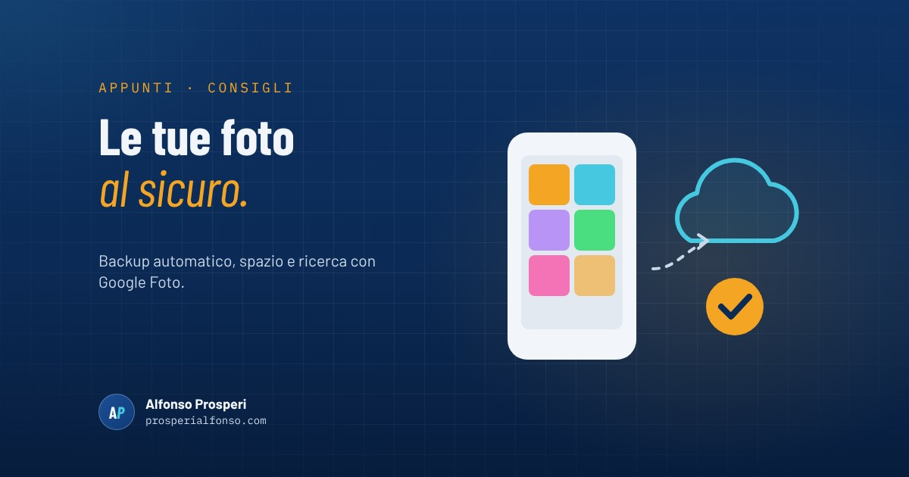

Il telefono si rompe, si perde o viene rubato: le foto di anni se ne vanno con lui. Il modo più semplice per evitarlo è attivare il backup automatico. Google Foto lo fa in silenzio, ogni volta che sei collegato al Wi-Fi, e ti permette di ritrovare foto e video da qualsiasi telefono, tablet o computer.
Cosa fa Google Foto
- Backup automatico. Copia nel tuo account Google le foto e i video scattati, anche su iPhone.
- Accesso ovunque. Entri con lo stesso account da un altro telefono o da photos.google.com e ritrovi tutto.
- Ricerca intelligente. Puoi cercare "mare", "torta", "cane" o il nome di un luogo e Foto trova le immagini giuste, senza averle catalogate.
- Album condivisi. Un album per la gita o per la festa, a cui tutti possono aggiungere le proprie foto.
- Ricordi e ritocchi. Raccolte automatiche dei momenti passati e strumenti per sistemare luce e colori.
Come attivare il backup
- Installa o apri Google Foto (su Android di solito c'è già).
- Tocca la tua foto profilo in alto a destra.
- Apri le impostazioni di Foto e attiva il Backup.
- Controlla la qualità: "Risparmio spazio" occupa meno, "Qualità originale" mantiene i file così come sono.
- Se non vuoi consumare giga, lascia il backup solo sotto Wi-Fi.
Lo spazio: cosa sapere
Ogni account Google ha uno spazio gratuito di 15 GB, condiviso tra Gmail, Google Drive e Google Foto. Con tante foto e video si riempie in fretta. Prima di pensare a un abbonamento Google One conviene fare un po' di pulizia:
- da Raccolta, Strumenti, Libera spazio elimini dal telefono le foto già salvate nel backup;
- dallo strumento di gestione dello spazio trovi screenshot, foto sfocate e video pesanti da cancellare;
- controlla anche Gmail e Drive: allegati grandi e vecchi file pesano sullo stesso spazio.
Attenzione a un dettaglio: se elimini una foto da Google Foto con il backup attivo, sparisce sia dal telefono sia dal cloud. Resta nel cestino per un periodo limitato, poi è persa.
Due consigli in più
- Proteggi l'account con la verifica in due passaggi: lì dentro ci sono anni di ricordi.
- Per i documenti usa Google Drive, che è pensato per PDF, ricevute e scansioni: ne parlo nella guida a Google Drive.